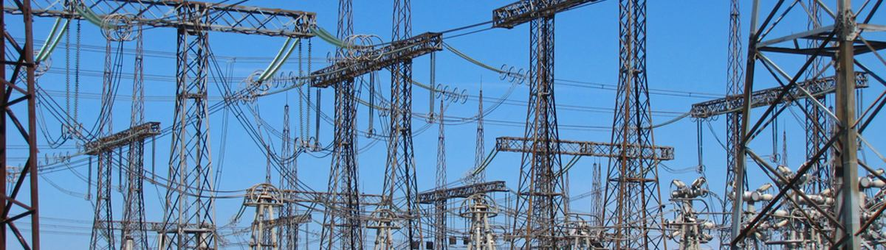

사진: Novoklimov · CC BY 4.0프랑스 한 가정의 2006~2010 1분 간격 전력 사용량 약 200만 줄 (부엌 · 세탁실 · 냉난방 계량기 포함)
| ① 한 행 | 한 시간 |
| ② 입력 X | 지난 며칠의 사용량 · 요일 · 시각 |
| ③ 출력 y | 다음 한 시간 사용량 (kWh) |
| ④ 평가지표 | MAE · RMSE |
| ⑤ 기준선 | 어제 같은 시각 · 지난주 같은 시각 |
누가, 왜, 어떻게 만든 데이터인지 직접 확인해 보세요.
인턴 · 산학협력 · 프로젝트 주제를 고를 때 참고하세요 (일반적인 예시).